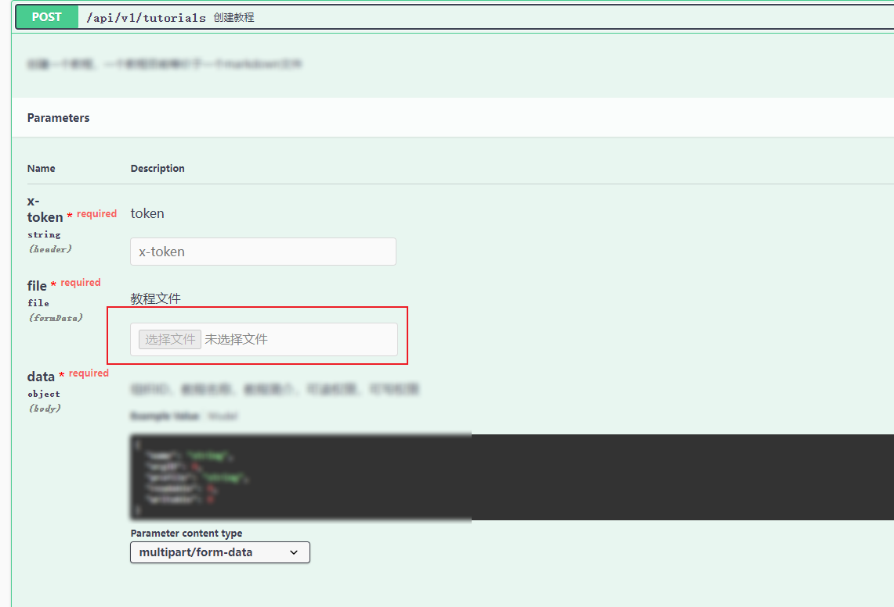
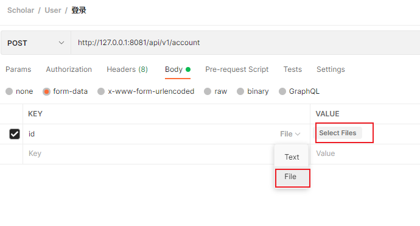

1. 第四章：gin对于文件的上传和返回
文件的上传与下载对于一个网站来说往往十分必要的，例如用户头像或者其他文件的上传等等。而此处的处理方法便是当前端将文件传给后端时，后端对文件进行保存到特定的位置中。随后根据路由设置，对这些文件以某个url供外访问，当然也可交给前端访问了。 当然后端也可对路由进行设置，保证某些路由被访问时需要一定的信息，这样就可以保证一定的安全性了。（不过也是后话了。
于是本节主要分为两个小部分，即文件的上传与返回。
// TODO 参考代码可见api/v1/file.go 中
1.1. 文件上传
下面给了一部分代码，供参考
// CreateTutorial
// @Summary 创建教程
// @Description 创建一个教程，一个教程目前等价于一个markdown文件
// @Tags 教程模块
// @Accept multipart/form-data
// @Produce json
// @Param x-token header string true "token"
// @Param file formData file true "教程文件"
// @Param data body model.CreateTutorialQ true "组织ID，教程名称，教程简介，可读权限，可写权限"
// @Success 200 {object} model.CommonA "是否成功，返回信息"
// @Router /api/v1/tutorials [post]
func CreateTutorial(c *gin.Context) {
// 获取请求数据
var data model.CreateTutorialQ
if err := c.ShouldBind(&data); err != nil {
c.JSON(http.StatusOK, model.CommonA{Success: false, Message: "请求参数非法"})
return
}
// 新建教程
tutorial := model.Tutorial{Name: data.Name,}
if err := service.SaveTutorial(&tutorial); err != nil {
c.JSON(http.StatusOK, model.CommonA{Success: false, Message: "创建教程失败"})
return
}
if err := c.SaveUploadedFile(data.File, thePath )); err != nil {
// 回滚数据库
_ = service.DeleteTutorialByID(tutorial.ID)
global.LOG.Panic(err)
}
c.JSON(http.StatusOK, model.CommonA{Success: true, Message: "创建教程成功"})
}
在主函数25行上，使用c.SaveUploadedFile 来保存文件，其中data.File 便是前端所传来的文件了，而后面的参数也是文件的具体保存路径。也即是上文所说的特定位置。 若是err为空则是保存成功，否则保存失败，本API中在21行创建了tutorial 的数据库表项。若是发生了文件错误，此处认为保存失败，也是删除对应的数据库表项。
实际使用中也可对文件的最大空间、允许文件的后缀等多个方面去限制文件上传，此处不多做演示了。
以上便是完成了文件的上传部分。那么要怎么找到对应的文件呢，此处的解决办法是利用路由设置，对指定的文件夹内文件可被特定的url所访问到。 当前端访问特定的url时，或可通过后端的验证便可访问到指定文件了。（具体限制在中间件部分细说）
1.2. 文件返回
路由规则如下
resourceRouter := basicRouter.Group("/resource"){
resourceRouter.Static("/image",imagePath )
}
第一行代表对路由进行分组，而下面则是控制指定路由对url的访问了。其中参数1便是路由、参数2便是保存位置了。个人大多直接指定绝对地址进行保存。
rootPath, err := os.Executable()
if err != nil {
panic("初始化失败：可执行程序路径获取失败")
}
rootPath = filepath.Dir(rootPath)
imagePath := filepath.Join(rootPath, "resource", "image")
保存成功后，若resourceRouter 的路由为127.0.0.1:8081/api/v1/resource ，则可通过127.0.0.1:8081/api/v1/resource/image+文件名访问到指定文件了。
而后端则可以在返回json中给明特定文件的url即可。下图为我上传了一个1.pdf 文件，当访问指定路由url时，IDM提示我下载该文件。

1.3. 其他
在本地测试时，个人目前所知两种相对方便的做法
在swagger中配置
// @Param file formData file true "教程文件"的注释，便可在swagger中上传文件
使用postman的formData中选择File模式即可
